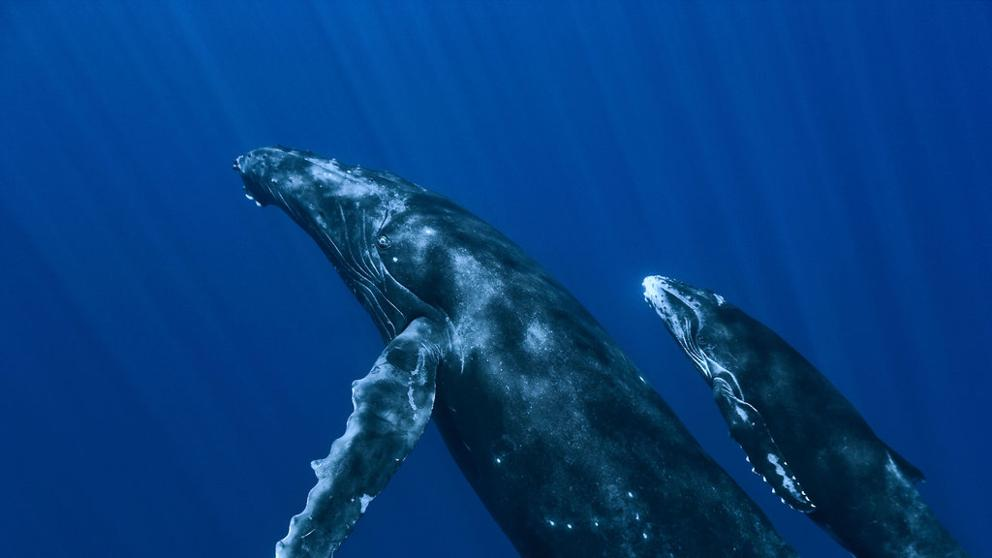

Caracteristicas
La ballena jorobada también es conocida por los nombres Yubarta y Gubarte. Realmente es un rorcual, ya que no
pertenece a la familia Balaenidae que le otorgaría el nombre de ballena, pero aun así, en idioma español es
conocida como ballena jorobada. Son cetáceos misticetos, es decir, contienen barbas en vez de dientes.

Alimantación
La Ballena Jorobada es un predador oportunista que se alimenta en la superficie de los océanos. Puede
alimentarse de plankton, (plantas y animales que viven en la superficie del agua) o de peces. En el hemisferio
norte, se alimenta de peces: capelán (Mallotus villosus), anchoveta (Engraulis mordax) bacalao (Gadus morhua).

Comportamiento
Como indicó la revista New Scientist, las ballenas jorobadas no son conocidas precisamente por su
comportamiento social. Usualmente son vistas nadando solas, en pareja o en pequeños grupos que no permanecen
juntos mucho tiempo

Reproducción
Las ballenas se emparejan durante los meses de invierno en aguas tibias. Una hembra está embarazada por
aproximadamente 11-12 meses antes de dar a luz. ... Una hembra usualmente produce una cria cada 2-3 años. Se
cree que el término de vida de una ballena jorobada es entre 30 y 40 años.